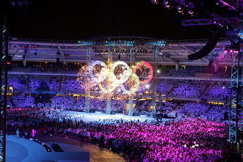
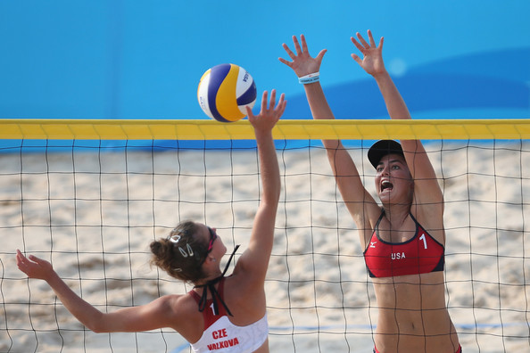
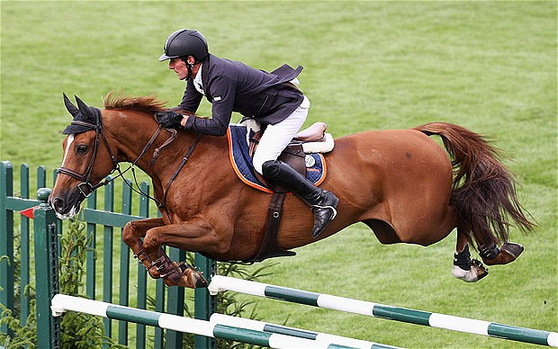
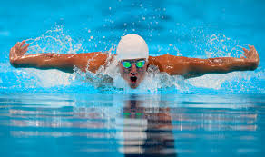

the olympics is a time that happens once every two years. there is a summer olympics and a winter olympics. every time the place of the olympics switches.
the sumer olypics you do outdoor spring and fall sports like soccer, softball, gymnastics, track, lacross, swim and more
the summer olympics is coming up this year in rio on august 5th 2016 i am really looking forward to it
the winter olympics is were you play sorts in the winter lke figure skating, bob sleding, ice skating and more
they go to see if they will make it or not if they make it they go to the olympics it is usaully 1 or 2 month's before the olympics begin.
soccer is a sport that you dont have to go to the trials for because theres alredy a mens and womens USA team and i think the mens team will come close to wining because in copa america the mens USA team came in 4th place in the whole thing my three favirite players favirite players are the strikers alex morgan and dempsey and the usa womens goalie hope solo
shot put is a sport that you go to the trials for its a sport that you ick up this heavy ball and try to throw it far its a men and women sport the men that made it to the 2016 olympics is kovacs cruoser and hill. hill and kovacs are partners
the usa swim team also goes to the trials like every other team they do 100meters and 500meters there is also diving.diving is when people do really cool dives
gymnastic is a sport that you go to the trials for that involves strength
.  you can get usa swimming clothing  you can get swim gear there  